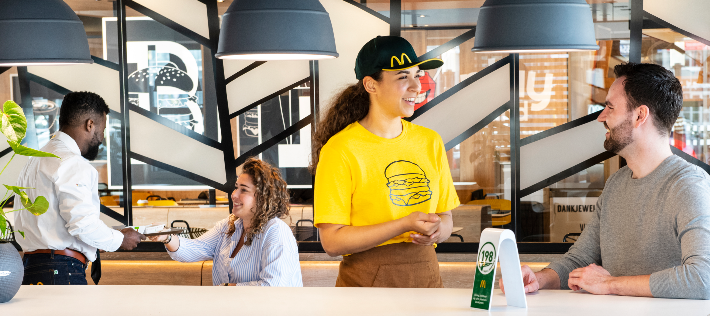

Al meer dan 50 jaar verwelkomen wij gasten in onze Restaurants. Iedereen komt bij ons samen: van gast tot medewerker, van ondernemer tot leverancier, jong en oud. Dit zorgt ervoor dat McDonald's meer is dan de grootste restaurantketen van Nederland. Wanneer je nauw verbonden bent met de samenleving, krijg je inzicht in de actuele kwesties en problemen. Dit leidt tot het delen van verantwoordelijkheid en het nemen van initiatieven om gezamenlijk oplossingen te vinden. Daarom zetten onze Restaurant Managers en Franchisenemers zich niet alleen actief in voor hun eigen Restaurants, maar ondernemen ze met een brede blik om zo een betekenisvolle bijdrage te leveren in Nederland.
Samen zijn we verantwoordelijk om in Nederland marktleiderschap op een verstandige en zinvolle manier verder te ontwikkelen. Dit realiseren we door weloverwogen beslissingen te nemen, goed werkgeverschap te tonen, onze rol als Goede Buur te vervullen en onze inzet voor een schonere omgeving serieus te nemen. We voeren constant verbetering door in ons menu-aanbod en verhogen de diversiteit ervan, onder andere door toevoeging van kip- en vegetarische keuzes. We werken aan duurzame innovaties in energie, bouw, verpakkingen en logistiek. We zijn pioniers in het bevorderen van lokaal betrokken ondernemerschap door middel van initiatieven die mensen met een lage socio-economische status, vluchtelingen en Ronald McDonald huizen ondersteunen . We zoeken contact met andere ondernemers, met buurtbewoners, raadsleden en de wijkagent. Onze inzet voor medewerkers omvat een scala aan interne mbo- en hbo-opleidingen, taalcursussen en andere ontwikkelingsmogelijkheden. Alles samengevat zijn wij een verbindende factor tussen de lokale gemeenschappen en het land, tussen de leveranciers en de gast.
brengen kunnen we niet alleen: we doen het samen met stakeholders, de overheid, de omgeving en onze gasten. We spelen graag een verbindende rol als sociale ontmoetingsplek en willen dat elke dag een beetje beter doen. Restaurant voor Restaurant, buurt voor buurt, dag in dag uit, vandaag én morgen.